December 1, 2010
(Next Release on December 8, 2010)
EIA Initiates Publication of New Data on Liquid Fuels Storage Capacity
Today, the Energy Information Administration (EIA) published its first semiannual report of liquid fuels storage capacity data. EIA has reported weekly and monthly inventory levels of crude oil and petroleum products for decades. What’s new is that the new storage capacity data can help analysts place petroleum inventory levels in context and better understand petroleum market activity and price movements, especially at key market centers such as Cushing, Oklahoma.
Before today’s release, EIA published only annual data on storage capacity located at refineries. With today’s release, storage capacity data now include the following improvements.
|
Using the new storage capacity data, it will be possible to calculate approximate storage capacity utilization rates at refineries and petroleum products terminals. Unfortunately, meaningful storage capacity utilization rates for operators of crude oil tank farms and pipelines, or for operators of products pipelines, cannot be readily calculated at this time. This is due to the fact that existing data on inventory levels at these facilities is reported on a different basis than the new storage capacity data. To address this, EIA is considering updates of crude oil and products pipeline surveys to require semiannual reporting of inventory levels on the same basis as storage capacity. This will enable data users to calculate storage capacity utilization rates for crude oil tank farms and pipelines as well as products pipelines.
As is often the case with energy information, the collection of storage capacity requires careful attention to detail. EIA reports both working storage capacity and net available shell storage capacity. The diagram below uses schematics for both tank and underground storage to illustrate these concepts.
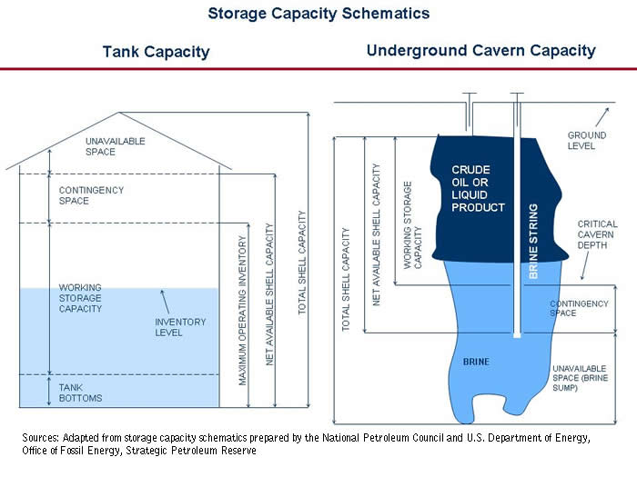
The difference between working and net available shell storage capacity is equal to tank bottoms and contingency space. Tank bottoms are unavailable barrels below the normal suction line of a storage tank. In floating roof tanks, there must be enough barrels in tank bottoms to keep the roof floating. Contingency space is available storage capacity that normally remains empty in storage tanks or filled with brine in the case of underground storage caverns. Contingency space allows flexibility to exceed working storage capacity without disrupting operations or creating safety or environmental hazards that result from excess filling.
EIA collects working storage capacity for operating tanks and caverns: those that held inventory on the report date as well as any that were empty but were available for immediate service. EIA also collects net available shell storage capacity for those same tanks and caverns. In addition, net available shell storage capacity also includes idle storage capacity. Idle storage capacity is not available for service but could be made available within 90 days of the report date following time for maintenance. Storage capacity that cannot be made available for use within 90 days is out of scope of our data collection and excluded from storage capacity totals
EIA collects additional storage capacity information from petroleum products terminals and crude oil tank farms to show capacity that is held for exclusive use by facility operators or that is leased to other companies. EIA does not subdivide individual tanks or caverns with regard to capacity held for exclusive use and capacity leased to others. If any portion of a tank or cavern is leased to another company, or if the capacity is typically made available for lease to others, then the entire capacity of the tank or cavern is reported as leased to others.
Retail Gasoline and Diesel Prices Decrease
The U.S. average retail price for a gallon of gasoline decreased 2 cents from last week to $2.86 per gallon, $0.23 per gallon higher than last year at this time. The decline was sharpest in the Midwest, where prices were almost four cents lower than last week, followed by the Gulf Coast where prices were down by almost three cents. The West Coast and Rocky Mountain both saw gasoline prices fall slightly less than the two cent decline seen nationally. The smallest decline for the week was the East Coast’s half of a cent decrease.
The average retail diesel price decreased for the second straight week, falling almost a penny versus last week. This marks the first price decrease in consecutive weeks since the beginning of September. The national average for a gallon of diesel is now $3.16 per gallon, $0.39 higher than last year at this time. Prices on the West Coast and in the Midwest both fell more than the national average decline, dropping over a penny from last week. However, prices on the West Coast remained the highest in the country at $3.30 per gallon. Diesel prices on the Gulf Coast and East Coast fell less than a penny, while prices in the Rocky Mountains registered a small increase of less than one cent.
Residential Propane Prices Increase
The U.S. average residential heating oil price showed virtually no increase from the previous week, holding at $3.11 per gallon. This is still an increase of approximately $0.37 per gallon from the same time last year. Wholesale heating oil prices increased by nearly $0.06 per gallon last week, reaching $2.41 per gallon. This is a $0.36 per gallon increase from last year’s price.
The U.S. average residential propane price increased over $0.02 per gallon from last week to reach $2.58 per gallon. This was an increase of $0.29 per gallon compared to the $2.29 per gallon average from the same period last year. Wholesale propane prices increased by $0.04 per gallon from $1.27 per gallon to $1.31 per gallon. This was an increase of approximately $0.08 per gallon when compared to the November 30, 2009 price of $1.23 per gallon.
Inventories of Propane Post a Build
U.S. stocks of propane posted a counter-seasonal build this week of 1.1 million barrels, ending at 65.4 million barrels total. Most of the build happened in the Midwest region of the country, which grew by 0.9 million barrels. The Gulf Coast regional inventories built by 0.4 million barrels. The East Coast regional stocks were down by 0.1 million barrels and the Rocky Mountain/West Coast inventories drew slightly. Propylene non-fuel use inventories represented 3.0 percent of total propane inventories.
Text from the previous editions of This Week In Petroleum is accessible through a link at the top right-hand corner of this page.
| Retail Prices (Dollars per Gallon) | |||||||
| 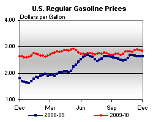 | 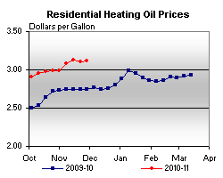 | ||||||
| 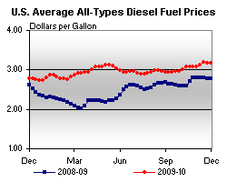 | 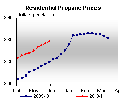 | ||||||
| Retail Data | Changes From | Retail Data | Changes From | ||||
| 11/29/10 | Week | Year | 11/29/10 | Week | Year | ||
| Gasoline | 2.856 | Heating Oil | 3.112 | ||||
| Diesel Fuel | 3.162 | Propane | 2.577 | ||||
| Futures Prices (Dollars per Gallon*) | |||||||||||||||||||||||||||
| 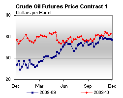 | 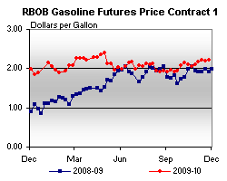 | ||||||||||||||||||||||||||
|
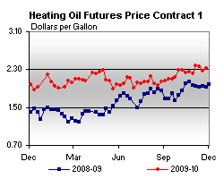 | ||||||||||||||||||||||||||
| *Note: Crude Oil Price in Dollars per Barrel. | |||||||||||||||||||||||||||
| Stocks (Million Barrels) | |||||||
| 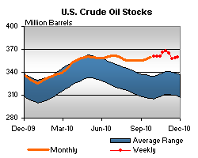 | 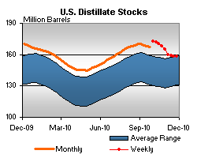 | ||||||
| 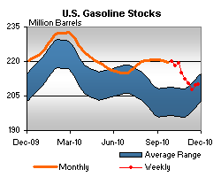 | 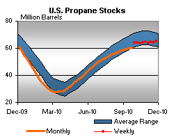 | ||||||
| Stocks Data | Changes From | Stocks Data | Changes From | ||||
| 11/26/10 | Week | Year | 11/26/10 | Week | Year | ||
| Crude Oil | 359.7 | Distillate | 158.1 | ||||
| Gasoline | 210.2 | Propane | 65.375 | ||||